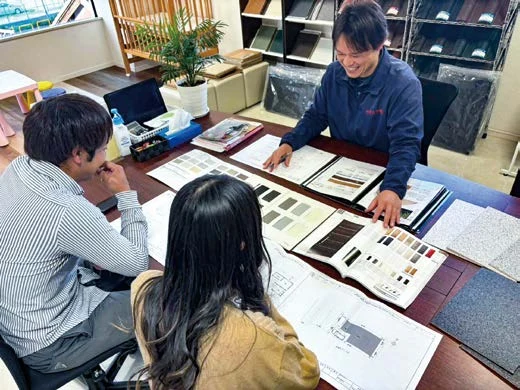
DESIGN初回から設計士が同席
収納する物まで伺い、間取りを考えます。床やドアは実物のサンプルで確認します。
01 家づくりの約束
770
建築棟数／2026年7月10日現在初回の打ち合わせから、施工中の確認、引き渡し後の相談まで。設計・営業・工務が社内でつなぎます。

DESIGN収納する物まで伺い、間取りを考えます。床やドアは実物のサンプルで確認します。
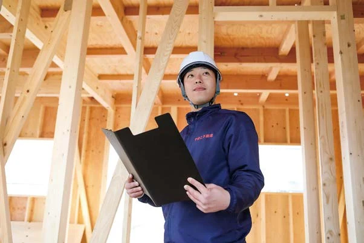
CONSTRUCTION決めた内容を現場責任者まで共有。施工中に気づいた改善案も、お客様へ伝えます。
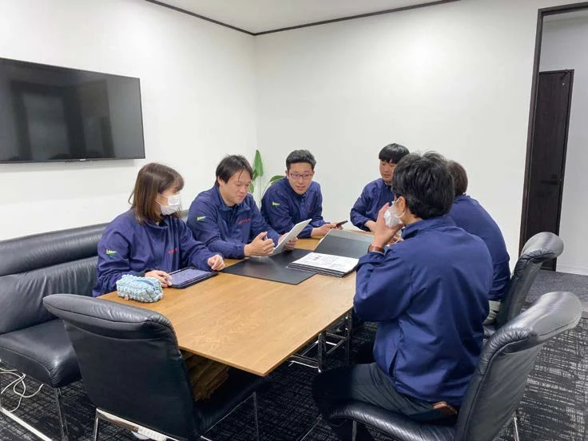
TEAM & AFTERCARE営業・設計・工務が分断されず、住み始めてからの相談まで対応します。
「家を売るというよりも、家族の家を建てるかのように親身になって細かやかな相談も聞いてくださり、ここで建てようと決めました。」
家づくりのご案内

標準仕様と、費用の仕組み。
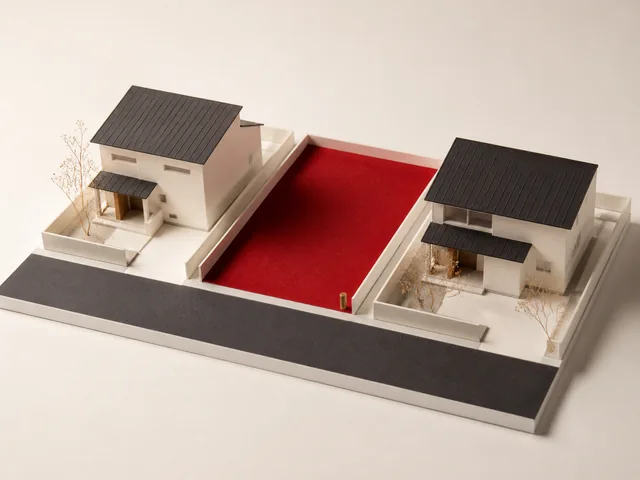
イラスト奈良・京都南部の土地を探す。
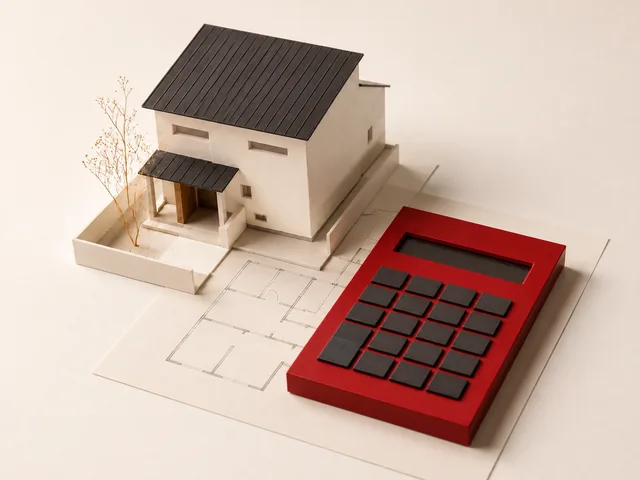
イラスト土地と建物の、月々の返済額を試算。
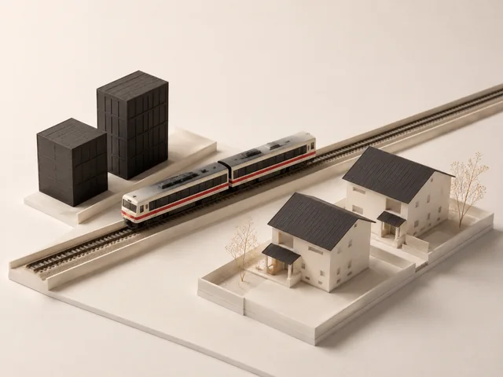
イラスト大阪への電車と、休日の車移動。
大阪で働く方へ。奈良の土地と通勤を、一緒に確認できます。
奈良からのアクセスを見る
THE YAMATO WAY
中間コストを抑え、その分を住まいの設備と仕様に。家づくりに必要な内容を、ご契約前に確認できます。
PRODUCT LINEUP
延床面積・間取り・標準設備を比較できます。
 生成コンセプト
生成コンセプト31坪・4LDKの最上位モデル
顔認証玄関ドア、ニチハ木目12mm軒天、ワイドサッシを採用。
2,680万円建物本体価格（税込・土地別途）
間取り・仕様を見る 生成コンセプト
生成コンセプト 生成コンセプト
生成コンセプト30坪・4LDKの標準モデル
3帖ベランダ、電動シャッター、防犯ガラス4か所が標準です。
2,680万円建物本体価格（税込・土地別途）
間取り・仕様を見る外観画像は生成コンセプトです。実際の建物・標準仕様を示す写真ではありません。価格・面積・仕様は2026年7月2日確認時点です。土地代は別途必要です。
構造・断熱・外壁・屋根は3商品共通です。
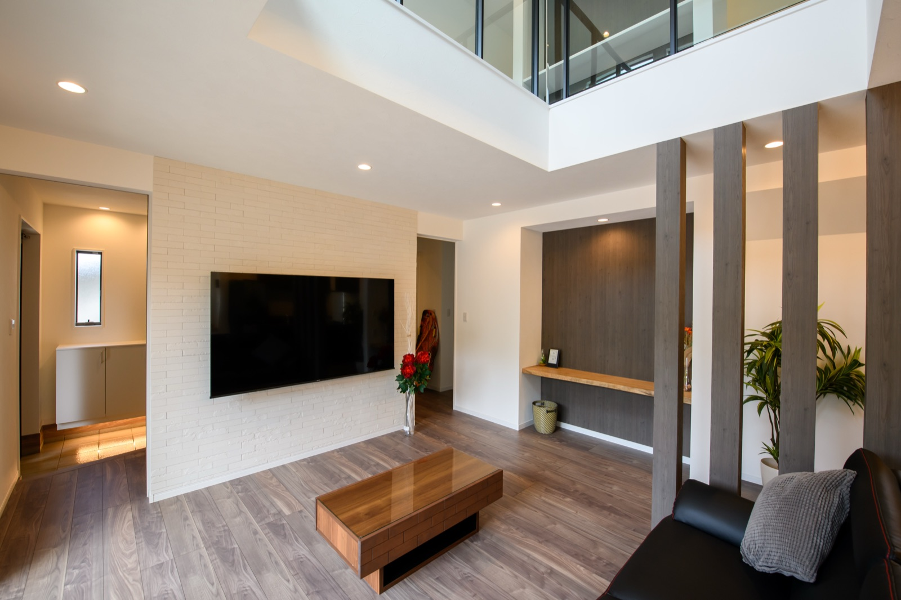
写真：やまとの施工例
回答者の住まいとは限りません
実際に掛かる本当の費用を提示して頂ける点が魅力的でした。
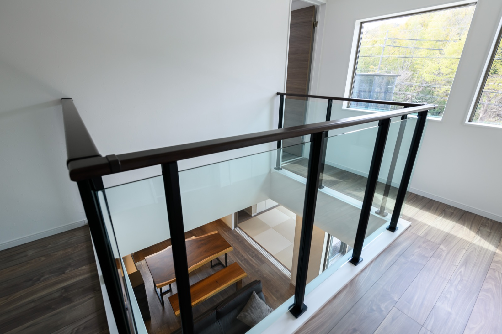
写真：やまとの施工例
回答者の住まいとは限りません
希望の間取りを実現できるということが決め手の一つになりました。
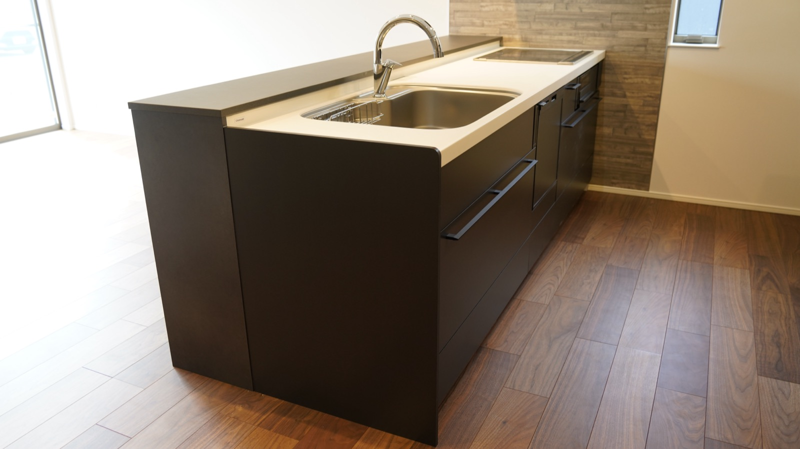
写真：やまとの施工例
回答者の住まいとは限りません
実際にモデルハウスを見に行き感動しました！後からオプション工事が必要ないと感じるほどでした。
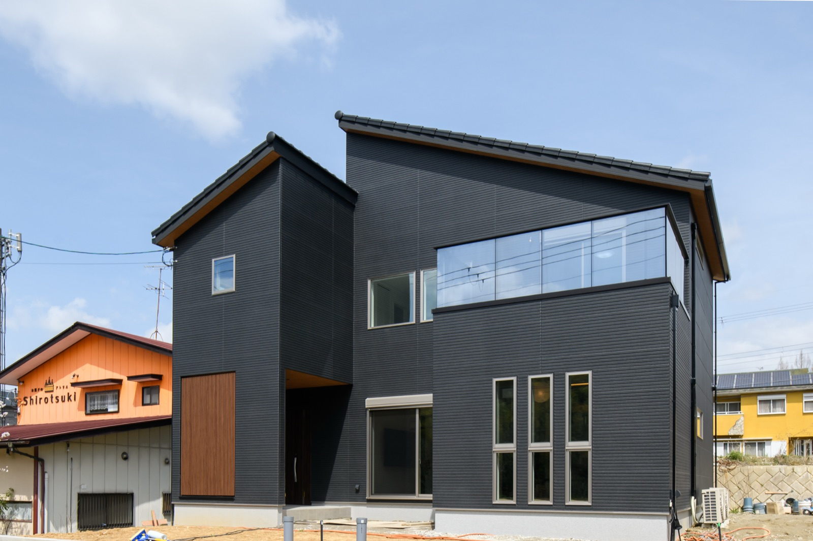
写真：やまとの施工例
回答者の住まいとは限りません
完成後もカーポートの設置や追加の外構工事で相談に乗ってもらっています。
MOVE TO NARA
奈良から大阪は意外にも近いんです。5人に一人は毎朝、大阪に出勤されています。
大阪から奈良への電車
大阪難波発
乗り換えなし
快速急行・平日夕方の一例
大阪難波から
列車・時間帯で異なります。
駅の前後の移動時間は含みません。
大阪難波18:27発 → 生駒18:49着 → 学園前18:55着 → 近鉄奈良19:08着。
主な駅を抜粋した概略図です。縮尺は実際と異なります。朝の通勤や最速の所要時間を示すものではありません。
近鉄公式時刻表2026年9月6日確認
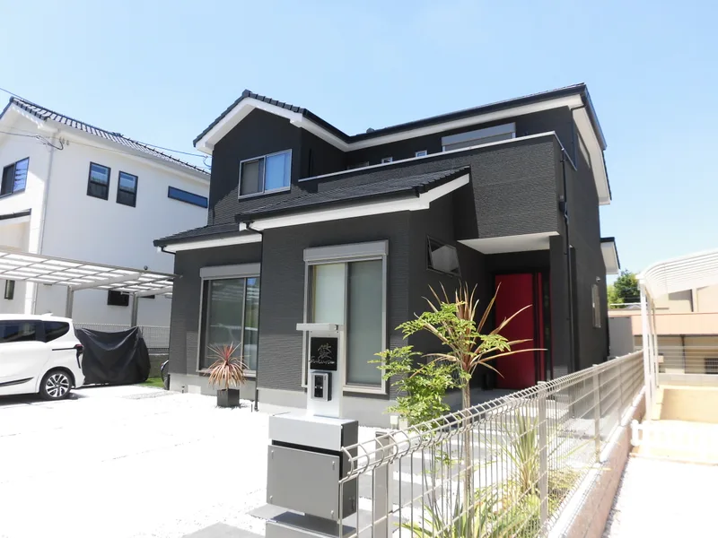
やまとの家の写真は、施工事例ページでご覧いただけます。
FAQ
ご契約内容の変更がなければ、追加料金は発生しません。ご契約後の間取り・仕様の変更・追加には、別途費用がかかります。
土地代は別途必要です。カーテンレールと居室照明は含みません。敷地条件や選択仕様による別途費用は、ご契約前のお見積もりに明示します。
できます。自社分譲地のご紹介、所有地での建築、どちらも対応します。
無料・予約制です。ご来場前にご予約ください。
あります。期間・対象・延長条件は、ご契約前に書面で明示します。
対応しています。木津川市・京田辺市などは、宇治市の京都支店でも承ります。
必要な情報はお送りしますが、ご契約を急がせることはありません。
土地の仕入れ・造成から設計・施工・販売までを自社で担い、中間工程を削減しています。建材・設備も一括仕入れです。
自社所有地の直接販売のため、仲介手数料は不要です。必要な地盤改良費は当社が負担します。支払時期と住宅ローン条件は個別に確認します。
NEWS
当サイトへの反映日を掲載しています。

VISIT & CONTACT
商品別の設備・仕様と、お見積もりの考え方をご案内します。見学は無料・予約制です。
お電話でのご相談：0742-36-1123
9:00〜19:00 ／ 火曜・水曜定休
制作確認用プレビュー ／ 返済額は入力条件に基づく概算です。予約送信は未接続。確認範囲を見る